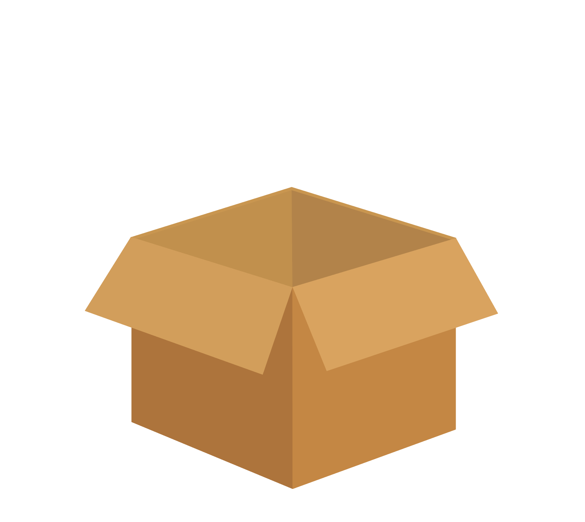
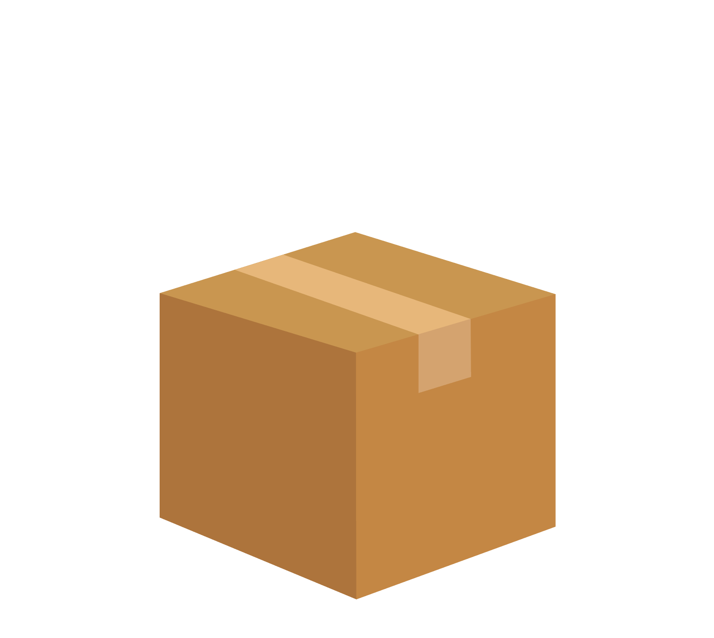
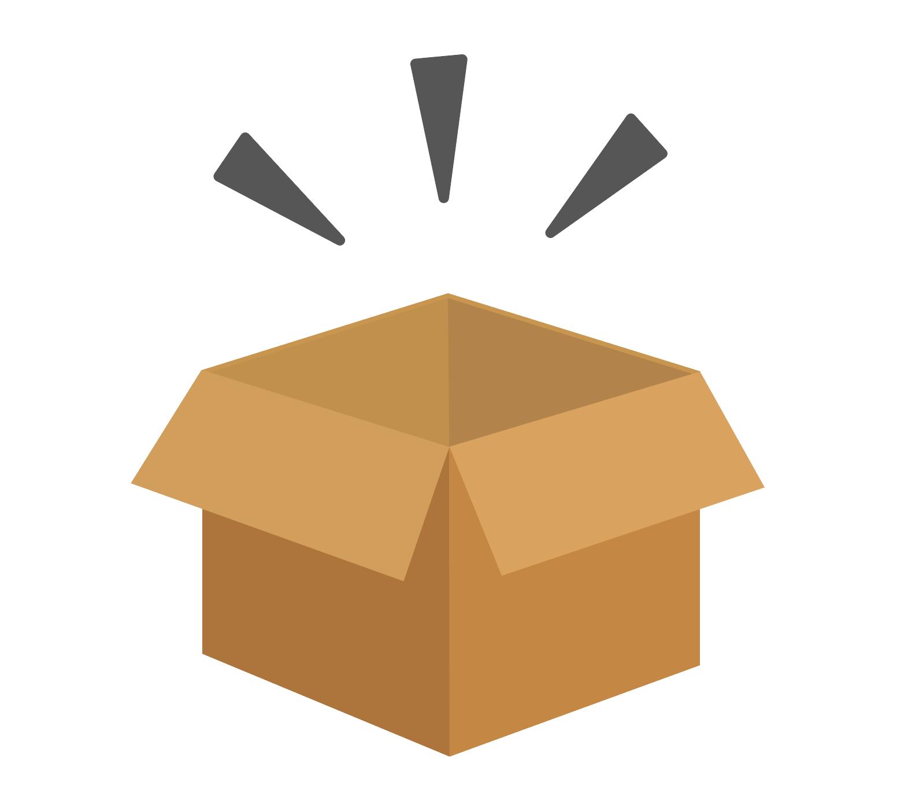

box
UI, Mobile Development
01 | background
box is my attempt to address the various pain-points that people experience during the moving experience. Stemming from my Fall 2018 application
to Berkeley Innovation, it turned into a personal project that I used during my winter break (~January 2019) in order to advance my
human-centered/UI design skills, as well as learn the basics of mobile development in implementing real functionality.
02 | case study
My application was based on the case study that aimed to address the problem statement of improving the moving experience.
Here is the original slide deck that inspired me to continue with this project.
Here is the original slide deck that inspired me to continue with this project.



03 | design goals
Because the application's function doesn't stray too far from those of your average list-making applications,
(with the only difference here having two rounds of checking off the items for both packing and packing)
I tried not to stray too far from the already formalized, intuitive design of lists.
Instead, I focused more of my attention to the visual appeal of the application. This included several key elements, such as color choices, button sizes, font selection, and element layout. I erred on the side of minimalism, being very keen to ensure that no element detracted from the overall clean interface.
Making this application enjoyable to use, and one that people would purposefully install in place of traditional list-making methods, would no doubt require a concentrated thought surrounding the core feelings of organization that the user would feel when interacting with the interface, and the first step of having the user feel organized, is for the tool that they're using to look organized.
Instead, I focused more of my attention to the visual appeal of the application. This included several key elements, such as color choices, button sizes, font selection, and element layout. I erred on the side of minimalism, being very keen to ensure that no element detracted from the overall clean interface.
Making this application enjoyable to use, and one that people would purposefully install in place of traditional list-making methods, would no doubt require a concentrated thought surrounding the core feelings of organization that the user would feel when interacting with the interface, and the first step of having the user feel organized, is for the tool that they're using to look organized.
04 | prototype
Here's the final interactive prototype! Feel free to play around with it, and maybe even leave a
comment! I'm always looking for feedback and criticism to improve my designs.
Disclaimer: the prototype is designed to walk the user through the main features, so full functionality is not to be expected :^)
Disclaimer: the prototype is designed to walk the user through the main features, so full functionality is not to be expected :^)
05 | mobile app
A mobile application implementation of this design is currently ~in the works~. I've been working modularly
(with the help from many many tabs of Youtube tutorials) to implement each component without compromising visual design, and
will hopefully be able to publish updates on this page as they become both available and worth sharing. Stay tuned!
06 | reflection
There were many very exciting features mentioned in the final slide of my case study application that I felt very ambitious initially
to immediately include in my prototype – these included things like an online community, the option to both benefit from and contribute
to templates, having a starter box assortment based on location, etc.
However, I realized that jumping into including all of these features without having a optimal version of the most basic design would make it difficult to build and iterate upon. (Not to mention the absolute beast that it would be to code up without having any mobile development experience.)
My goals for further improving the design and continuing implementing functionality are educationally motivated, so from a student perspective, I find plenty of value from starting off with something simple, and only when the design is well tested and implementing, build from this solid foundation rather than become overwhelmed by trying to include every idea that could possibly stem from it.
I personally am someone who becomes so blinded by the all of the possibilities that an idea can grow into that I never end up materializing the idea in the first place. I recognize the beauty in this imagination, but also the danger in it, and hope that I can use this new year as an opportunity for me to grow patience and discipline as a designer.
However, I realized that jumping into including all of these features without having a optimal version of the most basic design would make it difficult to build and iterate upon. (Not to mention the absolute beast that it would be to code up without having any mobile development experience.)
My goals for further improving the design and continuing implementing functionality are educationally motivated, so from a student perspective, I find plenty of value from starting off with something simple, and only when the design is well tested and implementing, build from this solid foundation rather than become overwhelmed by trying to include every idea that could possibly stem from it.
I personally am someone who becomes so blinded by the all of the possibilities that an idea can grow into that I never end up materializing the idea in the first place. I recognize the beauty in this imagination, but also the danger in it, and hope that I can use this new year as an opportunity for me to grow patience and discipline as a designer.